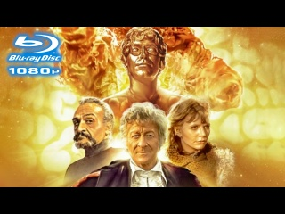
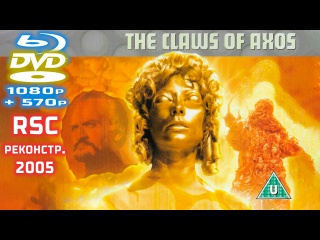
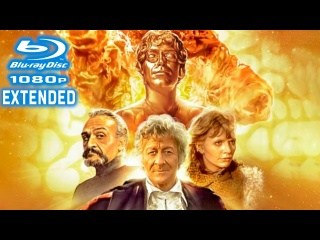
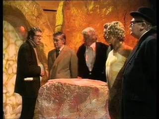

помощник

помощник

помощник
Субтитры: Русские и Английские |  |
|---|---|
+ RSC реконструкция цвета, 2005 (эпизоды 2, 3) Субтитры: Русские и Английские |  |
+ Расширенная версия (эпизод 1) Субтитры: Русские и Английские |  |
с обновлением визуальных эффектов (cunningmunki) Субтитры: отсутствуют |
| 1 и 4 эпизоды сохранились в цвете (видеокассета PAL 2") 2 и 3 эпизоды найдены в 1982 г. в ч/б записи * Цвет восстановлен (PAL D3) |
|---|
| помощник | помощник | помощник |
На Землю прибывает Аксос — единый живой организм, выглядящий как гигантское золотое существо. Аксоны предлагают человечеству чудо-вещество аксонит, способное питать всё и лечить любые болезни, и просят лишь немного энергии для починки корабля. Доктор не доверяет подаркам, но правительство и учёные готовы согласиться. А тем временем Мастер, оказавшийся на борту Аксоса, пытается использовать ситуацию в собственных интересах.
Серия примечательна визуальной частью — золотистый дизайн Аксоса и его корабля выделяется даже на фоне эпохи Третьего Доктора. И это одна из серий, где Мастер и Доктор волей-неволей оказываются по одну сторону баррикад.
VHS - 4 мая 1992 | DVD - 25 апреля 2005 |
|---|---|
DVD-SE - 22 октября 2012 |  Blu-ray - 8 марта 2021 * Версия в нашей группе |
